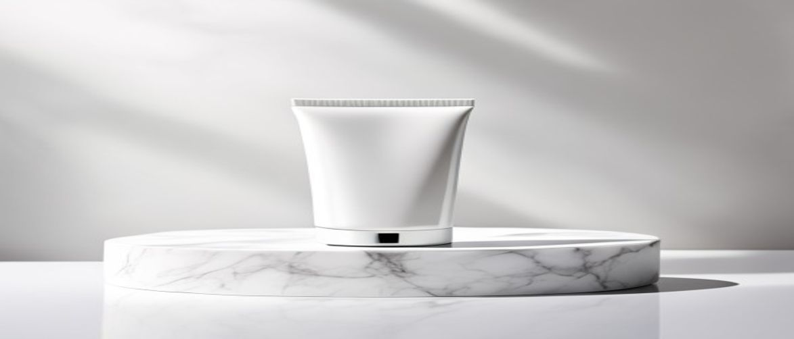

If you've been searching for a moisturizer that actually does what it promises, you've probably come across the name iS Clinical at some point. Maybe your dermatologist mentioned it, or you saw it on a skincare forum. Either way, you're here because you want real answers — and that's exactly what this guide gives you.
Let's break it all down: what makes an iS Clinical moisturizer worth considering, who it's actually for, how to use it properly, and whether it's truly worth the investment.
iS Clinical (Innovative Skincare) is a professional skincare brand founded by scientists and physicians. Unlike many brands that focus on marketing over results, iS Clinical builds its formulas around active ingredients that are backed by research and used in clinical settings.
Their moisturizers aren't just basic hydrators. They're designed to work at a deeper level — supporting the skin barrier, fighting oxidative stress, and helping skin recover and rebuild over time. That's why you'll find their products in dermatology clinics, medical spas, and plastic surgery offices rather than on the shelf at your local drugstore.
Here's what consistent users — and the science behind the ingredients — actually support. These aren't just marketing claims; they're benefits tied to well-researched, active ingredients that dermatologists recommend regularly.
This brand isn't for everyone — and that's okay. It's ideal for people with dry, dehydrated, or compromised skin barriers, anyone dealing with visible signs of aging, those with sensitive skin who react to fragrance or fillers in cheaper products, and people undergoing or recovering from professional skin treatments.
It may not be the best fit for budget-conscious shoppers or those who prefer a minimal skincare routine. For everyone else committed to a results-focused regimen, it's a strong choice across a wide range of skin types.
The effectiveness of an iS Clinical moisturizer comes from its carefully selected active ingredients. These aren't filler ingredients — each one is chosen for a specific, proven purpose. Together, they target multiple skin concerns at once without overwhelming the skin.
| Ingredient | What It Does for Your Skin |
|---|---|
| Hyaluronic Acid | Draws moisture into the skin; plumps and deeply hydrates |
| Vitamin C (L-Ascorbic Acid) | Antioxidant protection; supports collagen; brightens skin tone |
| Ceramides | Rebuilds and strengthens the skin barrier; prevents moisture loss |
| Vitamin B5 (Panthenol) | Soothes inflammation; supports healing and recovery |
| Centella Asiatica | Calms redness and irritation; ideal for sensitive skin |
| Vitamin E | Antioxidant; stabilizes Vitamin C; nourishes and protects skin |
| Copper Tripeptide-1 (Growth Factor) | Supports collagen production; improves elasticity and skin repair |
Hyaluronic Acid is a naturally occurring molecule in the skin that can hold an impressive amount of water relative to its size. In an iS Clinical moisturizer, it draws moisture into the skin and keeps it there, providing hydration that lasts well beyond application.
What makes iS Clinical's approach stand out is the use of multiple molecular weights of hyaluronic acid. Larger molecules hydrate the surface, while smaller, fragmented molecules penetrate deeper — giving you both immediate comfort and longer-term plumping effects.
Vitamin C in its L-Ascorbic Acid form is the most bioavailable and well-researched version of this ingredient. It protects skin from environmental damage caused by UV exposure and pollution, both of which accelerate visible aging.
Beyond protection, Vitamin C actively stimulates collagen synthesis — which means firmer, more elastic skin over time. It also works gradually to brighten the complexion and reduce the appearance of dark spots or uneven skin tone, making it one of the most valuable ingredients in any anti-aging formula.
Getting the most out of this moisturizer comes down to how and when you apply it. The right application technique makes a real difference in how well the active ingredients absorb and perform.
Consistency matters more than anything else here. Using it occasionally won't get you the results you're looking for — daily use, morning and evening, is what drives visible change.
Using too much product at once is one of the most common errors people make with concentrated formulas — it won't speed up results and often just leads to a greasy feeling. Skipping days is the other big one, because clinical skincare relies on consistency to work.
Never apply moisturizer to skin that hasn't been cleansed. Trapping impurities under the product reduces its effectiveness and can lead to breakouts, even with a non-comedogenic formula.
Always perform a patch test on a small area of skin before incorporating any new product into your routine, especially if you have hypersensitive or reactive skin. Wait 24 hours before applying it to your full face.
No product is perfect for everyone. Here's an honest look at what works well and what to consider before you buy — because making the right choice for your skin means seeing the full picture.
iS Clinical was founded by scientists and physicians, not marketers. Their formulas prioritize active ingredient concentration and clinical efficacy over fragrance, texture, or packaging. The brand distributes primarily through professional skincare channels, which reflects their focus on results rather than mass retail appeal.
Yes, several iS Clinical formulations are specifically designed with sensitive and reactive skin in mind. Ingredients like centella asiatica, panthenol, and ceramides are common across the range and are well-known for their calming properties. As always, check the specific product's ingredient list and do a patch test before full application.
Most users notice improvements in hydration and skin texture within two to four weeks of consistent daily use. For more significant changes — like reduced fine lines, improved firmness, or more even skin tone — you're typically looking at eight to twelve weeks. Collagen remodeling and cell turnover are gradual biological processes that can't be rushed.
Yes, iS Clinical moisturizers are designed to integrate into a complete skincare routine. They layer well with serums and treatments. If you're using multiple actives like retinol or exfoliating acids, it's worth consulting a dermatologist to build a routine that avoids irritation and maximizes results.
An iS Clinical moisturizer is a solid investment if you're serious about your skin and want products that are built around real science rather than clever marketing. The ingredient quality is high, the formulas are thoughtfully developed, and the brand's clinical background means there's genuine research behind what you're applying to your face.
That said, it's not magic. No moisturizer is. What it offers is a well-formulated, dermatologist-trusted product that — when used consistently and as part of a complete routine — can make a meaningful difference in how your skin looks and feels over time. If you're ready to move beyond basic hydration and invest in skincare that's built to actually work, an iS Clinical moisturizer is absolutely worth adding to your regimen.
Have questions or a comment on the post? Send us a message and we will get back to you soon.